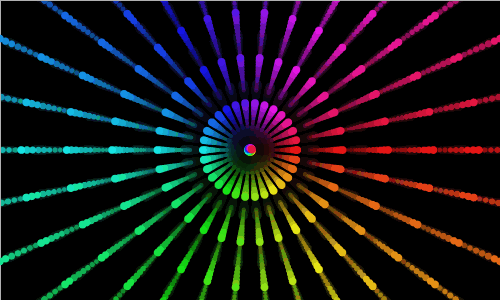

hsl(0, 20%, 50%)
hsl(120, 100%, 80%)
hsl(240, 100%, 50%)
HSL (Hue, Saturation, Lightness) - цветовая модель, в которой цветовыми координатоми является тон, насыщенность и яркость HSL- Википедия
Для того, чтобы задать цвет этим способом Вы должны указать:

- оттенок цветa указывается в градусах поворота цветового круга ( 0 градусов - красный, 120 градусов - зеленый, 240 градусов - голубой и т.д);
- насыщенность цвета указывается в процентах (по мере процентов цвет будет блекнуть);
- яркость цветатакже указывается в процентах (0% - темный, 100% - светлый).